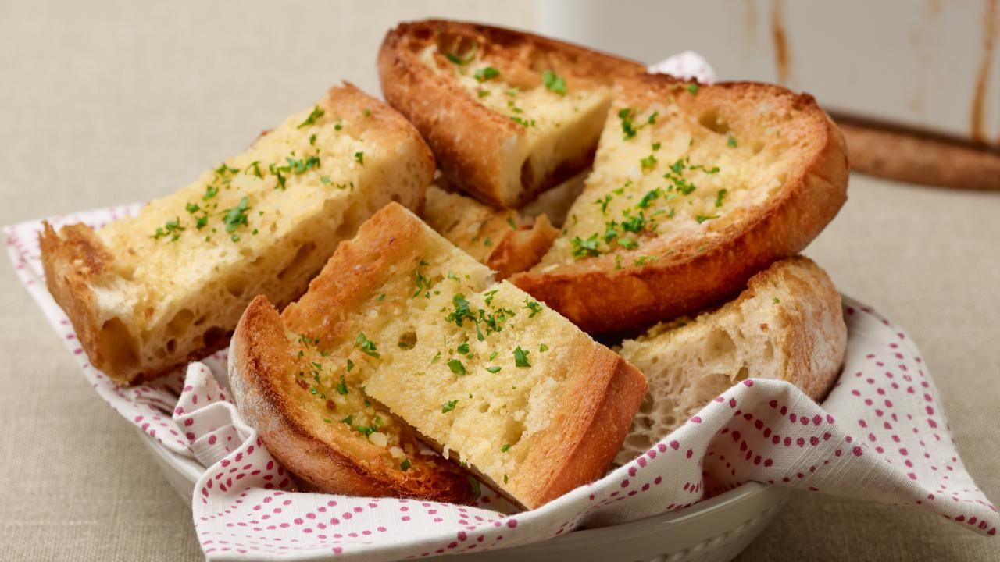

Delicious Garlic Bread Recipe

Dish Discription
A perfectly crunchy and savory garlic bread recipe perfect for any occasion!
Ingredients
- 4 cloves garlic, crushed
- 2 tbsp butter
- 2 tbsp extra-virgin olive oil
- 1 loaf crusty bread, split
- 3 tbsp grated cheese, Parmigiano or Romano, optional
- Chopped fresh parsley
Steps
- Combine garlic, butter, and oil in a
microwave safe dish or in a small
saucepan. Heat in garlic and butter and oil in
microwave for 1 minute or in a small pot
over moderate-low heat for 3 minutes.
- Toast split bread under broiler.
Remove bread when it is toasted
golden brown in color. Brush bread liberally
with garlic oil. Sprinkle with cheese, if using,
and add parsley. If you added cheese, return to
broiler and brown 30 seconds. Cut into
chunks and serve.